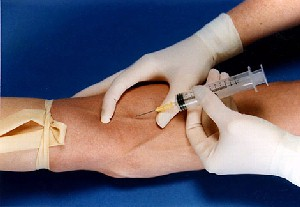

Взятие венозной крови с помощью шприца
Если вам не понятны инструкции, которые изложены ниже, то вам не стоит проводить эту процедуру. Пожалуйста, пусть ваши действия контролирует кто-то, кто имеет опыт работы с кровопусканием, также рекомендуем вам пройти мед. курсы. И, пожалуйста, прочитайте статью "Венепункция" для получения более подробной информации о том, как брать кровь. Администрация VC не несет никакой ответственности, если вы нанесете вред своему или чьему либо еще здоровью своим неумением или неопытностью. [прим. Регент - лично я рекомендую использовать вакуумные пробирки (вакутайнеры), а не шприцы. Они дороже обычных шприцов, но намного проще и удобнее в использовании.]
Проще описать сам процесс на примере вены мужчины, чем женщины, так как вены мужчин, как правило, более заметны. Используем предплечную или локтевую вены на сгибе локтя. Пошаговая инструкция:
# 1. Убедитесь, что шприцы и иголки стерильны и находятся в упаковке. В противном случае, НЕ использовать их!
# 2. Наденьте стерильные перчатки, возьмите эластичный жгут или другой шнур, перевяжите вокруг верхнего бицепса. [См. рис. 1]
# 3. Подождите примерно 1 минуту и посмотрите на вену. Она должна набухнуть.
# 4. Если вы хорошо видите вену, протрите ее спиртом, пусть просохнет, а вы пока откройте упаковку со шприцем.
# 5. Вытащите поршень шприца приблизительно на четверть. После снятия колпачка верните поршень в обратное положение (колпачок проще взять в зубы)
# 6. Рука должна лежать устойчиво и находится под небольшим углом, чтоб можно было получить доступ к вене. Возможно, вам придется перемещать её несколько раз, но делать это нужно осторожно. Примечание: Всегда держите иглу так, чтобы она была направлена от руки донора к его / ее телу. [См. рис. 1]

Рис. 1
# 7. Когда вы ввели иглу в вену, не перемещайте и не двигайте шприцом, а медленно тяните назад за поршень. Шприц наполняется медленно, но это нормально. Если вы зайдете слишком быстро, то можете повредить вену. Если вы ввели иглу более чем на 1/2 см, то осторожно отступите.
# 8. Если вы набрали шприц в полном объеме, мягко надавите ватным тампоном на место укола и вытяните иглу. Пусть донор остается на месте, пока вы снимаете иглу и переливаете кровь в стакан, чтобы выпить. Это необходимо делать быстро, чтобы не было сгустков. Я пила свернувшуюся кровь, и это было ощущение не из приятных.
# 9. Залепите место прокола пластырем с ватным тампоном для предотвращения гематомы. Вы также можете брать кровь из вены на руке, но это более болезненно для доноров. (Это касается тех, кто много раз брал кровь. В результате тестов, проведенных мной в моей жизни, я знаю, это больно. Я длительное время делала внутривенные инъекции и ненавижу это! У меня астма, и я должна время от времени принимать внутривенно раствор Medrol)
Чтобы донору было легче:
Если у него нет хороших вен, то в первую очередь надо практиковаться на мускулистых мужчинах. В их вены иглу надо вставлять прямо. Практически под прямым углом. Кроме того, желательно в момент прокалывания вены их отвлечь. Я говорю: «Пчелиный яд». Но это пережитки прошлого.
Не используйте вены на запястье или на лодыжке ноги. В этих местах кровь имеет тенденцию быстро сворачиваться. Если вы не можете взять кровь профессионально, используйте только вены на предплечьях.
(Я могу нарисовать кровеносные артерии. Но знайте, это опасно и трудно, если вы не имеете соответствующих навыков.)
Кроме того, вы должны контролировать количество выпиваемой крови. Организм может выдержать потерю крови до 420 мл каждые 60 дней. Не превышайте эту дозу. Вы рискуете не только развитием у донора анемии. Вы рискуете еще и тем, что у донора может быть сердечная недостаточность.
Убедитесь, что донор принимает витамин В12. Это позволит предотвратить развитие анемии. Его рацион должен содержать продукты с высоким содержанием железа, такие, как шпинат (хорошо в запеканке с сыром) и печень (Тьфу! Я предпочла бы умереть!). Также в рационе должно быть много мяса, так как оно содержит много витаминов.
Симптомы анемии:
- Затрудненное дыхание
- Кровоподтеки
- Извращенный аппетит (стремление к употреблению несъедобных веществ)
- Боль в полости рта и языка (не молочница)
- Усталость
- Иногда депрессия
Я надеюсь, что это вам поможет.
Кстати, мне было бы интересно выборочно обследовать людей, использующих шприцы и измерить количество, которое они могут выпить. Я хотела бы знать, многие ли так же, как и я, могут выпить более 20 мл. Я начала с минимальных доз и каждый раз увеличивала. Иногда я использую шприцы, большие по объему. Я также хотела бы узнать, у многих ли может быть рвота кровью или черный стул после употребления 20 мл. У меня такие симптомы отсутствуют. Я разрабатываю медицинскую теорию, основанную на всасывании железа и RBC. Я думаю, гранулоциты могут стать причиной снятия симптоматики. Но пока не знаю точно. Надо еще многое сделать, чтобы доработать эту идею.

Автор: Mrs. H., RN.
Источник: sanguinarius.org

Перевод: Twin и Walkiriya.
(собственность vampirecommunity.ru)
[Наверх]